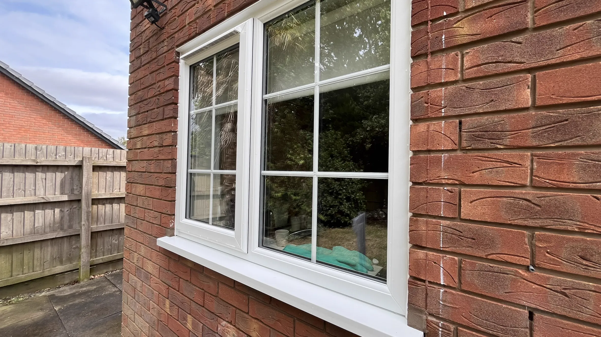

We use purified, deionised water — no detergents or chemicals needed. Naturally streak-free results every time.
Pure water dries spotlessly clean, leaving your glass crystal clear without any residue, smears, or water marks.
Our extending water-fed pole system safely reaches upper floors from the ground — no ladders, no fuss.
Choose a cleaning round every 4, 5 or 6 weeks. We already serve an established round in Bromsgrove.
Professional exterior window cleaning using the pure water system
At All Saints Jet Washing, we provide professional exterior window cleaning across Bromsgrove and nearby areas. Our pure water cleaning method leaves glass spotless and streak-free without the need for detergents or chemicals.
Our water-fed pole system allows us to clean windows, frames and sills safely from the ground, even on upper floors. This method gives excellent results and keeps your windows cleaner for longer — because the purified water attracts no new dust or dirt when it dries.
We offer regular window cleaning rounds every 4, 5 or 6 weeks to suit your needs. We already have an established window cleaning round in Bromsgrove, so you can be sure of a reliable and regular service.
Whether you're looking for a regular service or a one-time clean, All Saints Jet Washing keeps your windows looking their best all year round.
Get a Free Quote
Three simple steps to sparkling windows
Get in touch for a free quote
Call or message us and we'll arrange a no-obligation quote for your property. We cover Bromsgrove and all surrounding areas and can usually book you in quickly.
We clean using the pure water system
Our water-fed pole brushes and purified water deep-clean glass, frames and sills simultaneously — all safely from the ground, with no ladders needed.
Crystal-clear results, every visit
The pure water dries completely spotless. We'll set you up on a regular round — every 4, 5 or 6 weeks — so your windows always look their best.
“We were long overdue for our windows, gutters and fascias to be cleaned. Ashley was recommended to us — he came out to give us a quote and within the week the work was all done! Arrived on time and finished the job to a high standard! Looks brand new again! Highly recommended.”
Ready for crystal-clear windows?
Get in touch today for a free, no-obligation quote. We serve Bromsgrove and all surrounding areas.